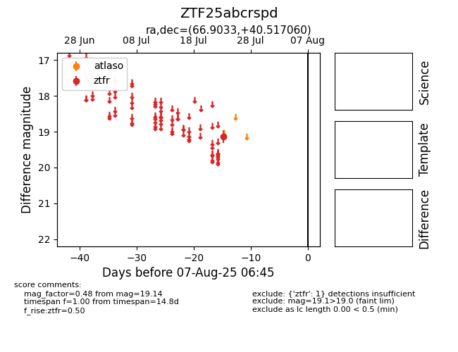

Target ZTF25abcrspd at 2025-08-07 07:30, see:
FINK: fink-portal.org/ZTF25abcrspd
Lasair: lasair-ztf.lsst.ac.uk/objects/ZTF25abcrspd
ALeRCE: alerce.online/object/ZTF25abcrspd
alt names
ZTF25abcrspd (ztf,fink)
coordinates:
equatorial (ra, dec) = (66.9033,+40.51706)
galactic (l, b) = (161.1409,-5.79812)
photometry
last ztfr=19.14
1 ztfr detections
